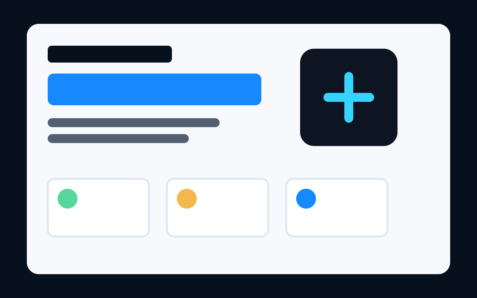
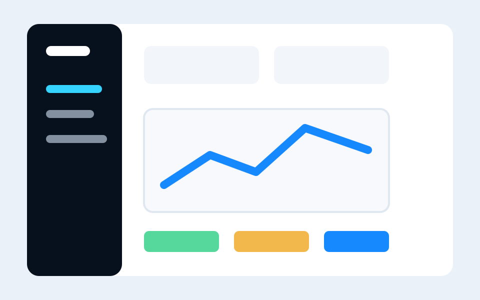

Presença digital
Criamos páginas, campanhas e estruturas digitais para empresas ganharem visibilidade, transmitirem confiança e abrirem novos canais de aquisição.
Estratégia. Tecnologia. Resultados.
Soluções digitais para empresas que querem ser encontradas, vender mais e operar com menos atrito.
Transformação digital estratégica
Hoje, a presença digital influencia diretamente a forma como uma empresa é percebida pelo mercado. Negócios com baixa visibilidade, processos desorganizados e operações descentralizadas acabam perdendo tempo, produtividade e oportunidades de crescimento.
A Stratech surge para resolver esse problema através de soluções digitais que fortalecem marcas, aumentam a captação de clientes e tornam operações empresariais mais organizadas, eficientes e escaláveis.
Desenvolvemos estruturas digitais pensadas para aumentar a visibilidade da sua empresa, fortalecer sua autoridade no mercado e atrair clientes qualificados.
Criamos sites institucionais, landing pages e soluções estratégicas capazes de transmitir profissionalismo, gerar confiança e transformar visitantes em oportunidades reais de negócio.
Empresas que utilizam múltiplas planilhas, processos manuais e sistemas desconectados acabam enfrentando retrabalho, falhas operacionais e perda de produtividade.
A Stratech desenvolve sistemas administrativos personalizados para centralizar informações, integrar setores e simplificar fluxos de trabalho, proporcionando mais controle, organização e eficiência para a gestão.
Tecnologia sem estratégia gera desperdício. Por isso, cada solução é desenvolvida com foco em resultado, escalabilidade e crescimento sustentável.
Nossa proposta é unir estratégia, design e tecnologia para transformar investimentos digitais em estruturas sólidas, capazes de acompanhar a evolução da empresa e impulsionar seu crescimento no longo prazo.
O que fazemos
Criamos páginas, campanhas e estruturas digitais para empresas ganharem visibilidade, transmitirem confiança e abrirem novos canais de aquisição.
Desenvolvemos experiências objetivas, responsivas e orientadas à conversão para apresentar ofertas, captar contatos e fortalecer a marca.
Construímos soluções para centralizar processos, organizar dados, reduzir tarefas manuais e simplificar a rotina operacional.
Mapeamos gargalos e implementamos recursos para diminuir custos operacionais, acelerar decisões e dar mais controle à gestão.
Base institucional
Impulsionar empresas por meio de soluções digitais estratégicas, aumentando sua presença no mercado e tornando suas operações mais simples, integradas e eficientes.
Ser reconhecida como uma parceira de tecnologia que transforma negócios locais e empresas em crescimento em operações digitais mais fortes, organizadas e competitivas.
Modelos padronizados
Modelo para campanhas, anúncios e geração de leads.
Modelo para apresentar empresa, serviços, diferenciais e contato.

Modelo para explicar uma oferta específica e conduzir o visitante à conversão.

Modelo visual para dashboards, rotinas internas e acompanhamento de indicadores.
Vamos conversar
Conte para a Stratech qual processo precisa ser organizado ou qual oferta precisa chegar a mais clientes.
© 2026 Stratech. Todos os direitos reservados.